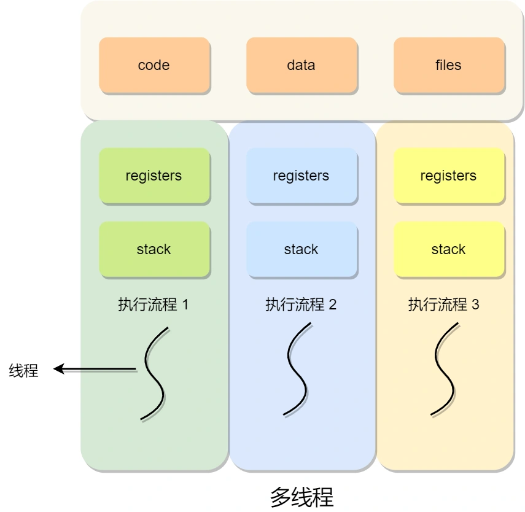

process-thread
运行中的程序，就被称为「进程」（Process）。
简介
- 进程
- 进程的概念
- 进程的状态
- 进程的控制结构
- 进程的控制
- 进程的上下文切换
- 线程
- 为什么使用线程？
- 什么是线程？
- 线程与进程的比较
- 线程的上下文切换
- 线程的实现
- 调度
- 调度时机
- 调度原则
- 调度算法
进程
进程的概念
进行中的程序，就被称为「进程」（Process）。
编写的代码 -编译-> 二进制可执行文件 -运行-> 加载进内存 -cpu执行-> 运行中
对于一个支持多进程的系统，CPU 会从一个进程快速切换至另一个进程，其间每个进程各运行几十或几百个毫秒。
这种多个程序、交替执行的思想，就有 CPU 管理多个进程的初步想法。
虽然单核的 CPU 在某一个瞬间，只能运行一个进程。但在 1 秒钟期间，它可能会运行多个进程，这样就产生并行的错觉，实际上这是并发。
并发vs并行：并发是单核处理器快速交替执行多个进程，并行是多核处理器分别执行各自的进程。
进程的状态

如果有大量处于阻塞状态的进程，进程可能会占用着物理内存空间，在虚拟内存管理的操作系统中，通常会把阻塞状态的进程的物理内存空间换出到硬盘，等需要再次运行的时候，再从硬盘换入到物理内存。
用挂起状态来描述进程没有占用实际的物理内存空间的情况
导致进程挂起的原因不只是因为进程所使用的内存空间不在物理内存，还包括如下情况：
1. 通过 sleep 让进程间歇性挂起，其工作原理是设置一个定时器，到期后唤醒进程。
2. 用户希望挂起一个程序的执行，比如在 Linux 中用 Ctrl+Z 挂起进程；
进程的控制结构
进程控制块（process control block，PCB）数据结构来描述进程的
PCB 是进程存在的唯一标识
进程描述信息：
1. 进程标识符：标识各个进程，每个进程都有一个并且唯一的标识符；
2. 用户标识符：进程归属的用户，用户标识符主要为共享和保护服务；
进程控制和管理信息：
1. 进程当前状态，如 new、ready、running、waiting 或 blocked 等；
2. 进程优先级：进程抢占 CPU 时的优先级；
资源分配清单：
有关内存地址空间或虚拟地址空间的信息，所打开文件的列表和所使用的 I/O 设备信息。
CPU 相关信息：
CPU 中各个寄存器的值，当进程被切换时，CPU 的状态信息都会被保存在相应的 PCB 中，以便进程重新执行时，能从断点处继续执行。
每个 PCB 是如何组织的呢？
通常是通过链表的方式进行组织，把具有相同状态的进程链在一起，组成各种队列。比如：
1. 将所有处于就绪状态的进程链在一起，称为就绪队列；
2. 把所有因等待某事件而处于等待状态的进程链在一起就组成各种阻塞队列；
3. 另外，对于运行队列在单核 CPU 系统中则只有一个运行指针了，因为单核 CPU 在某个时间，只能运行一个程序。
进程的控制
创建进程
操作系统允许一个进程创建另一个进程，而且允许子进程继承父进程所拥有的资源。- 申请一个空白的 PCB，并向 PCB 中填写一些控制和管理进程的信息
- 为该进程分配运行时所必需的资源，比如内存资源；
- 将 PCB 插入到就绪队列，等待被调度运行；
终止进程
进程可以有 3 种终止方式：正常结束、异常结束以及外界干预（信号 kill 掉）。当子进程被终止时，其在父进程处继承的资源应当还给父进程。而当父进程被终止时，该父进程的子进程就变为孤儿进程，会被 1 号进程收养，并由 1 号进程对它们完成状态收集工作。
- 查找需要终止的进程的 PCB；
- 如果处于执行状态，则立即终止该进程的执行，然后将 CPU 资源分配给其他进程；
- 如果其还有子进程，则应将该进程的子进程交给 1 号进程接管；
- 将该进程所拥有的全部资源都归还给操作系统；
- 将其从 PCB 所在队列中删除；
阻塞进程
当进程需要等待某一事件完成时，它可以调用阻塞语句把自己阻塞等待。而一旦被阻塞等待，它只能由另一个进程唤醒。- 找到将要被阻塞进程标识号对应的 PCB；
- 如果该进程为运行状态，则保护其现场，将其状态转为阻塞状态，停止运行；
- 将该 PCB 插入到阻塞队列中去；
唤醒进程
进程由「运行」转变为「阻塞」状态是由于进程必须等待某一事件的完成，所以处于阻塞状态的进程是绝对不可能叫醒自己的。如果某进程正在等待 I/O 事件，需由别的进程发消息给它，则只有当该进程所期待的事件出现时，才由发现者进程用唤醒语句叫醒它。
- 在该事件的阻塞队列中找到相应进程的 PCB；
- 将其从阻塞队列中移出，并置其状态为就绪状态；
- 把该 PCB 插入到就绪队列中，等待调度程序调度
进程的上下文切换
各个进程之间是共享 CPU 资源的，在不同的时候进程之间需要切换，让不同的进程可以在 CPU 执行，那么这个一个进程切换到另一个进程运行，称为进程的上下文切换。
CPU 上下文切换
CPU 寄存器和程序计数器是 CPU 在运行任何任务前，所必须依赖的环境，这些环境就叫做 CPU 上下文。CPU 上下文切换就是先把前一个任务的 CPU 上下文（CPU 寄存器和程序计数器）保存起来，然后加载新任务的上下文到这些寄存器和程序计数器，最后再跳转到程序计数器所指的新位置，运行新任务。
上面说到所谓的「任务」，主要包含进程、线程和中断。所以，可以根据任务的不同，把 CPU 上下文切换分成：进程上下文切换、线程上下文切换和中断上下文切换。
进程的上下文切换到底是切换什么呢？
进程是由内核管理和调度的，所以进程的切换只能发生在内核态。进程的上下文切换不仅包含了虚拟内存、栈、全局变量等用户空间的资源，还包括了内核堆栈、寄存器等内核空间的资源。
发生进程上下文切换有哪些场景？
- CPU时间片耗尽，运行状态变为就绪状态，系统从就绪队列选择另外一个进程运行；
- 在系统资源不足（比如内存不足）时，要等到资源满足后才可以运行，这个时候进程被挂起；
- 通过睡眠函数sleep将滋滋主动挂起；
- 有更高优先级进程运行时，当前进程被挂起；
- 发生硬件中断时，CPU 上的进程会被中断挂起，转而执行内核中的中断服务程序；
线程
在早期的操作系统中都是以进程作为独立运行的基本单位，直到后面，计算机科学家们又提出了更小的能独立运行的基本单位，也就是线程。
为什么使用线程？
线程之间可以并发运行且共享相同的地址空间。
什么是线程？
线程是进程当中的一条执行流程。
同一个进程内多个线程之间可以共享代码段、数据段、打开的文件等资源。
每个线程各自都有一套独立的寄存器和栈，这样可以确保线程的控制流是相对独立的。
线程的优点：
1. 一个进程中可以同时存在多个线程；
2. 各个线程之间可以并发执行；
3. 各个线程之间可以共享地址空间和文件等资源；
线程的缺点：
1. 当进程中的一个线程崩溃时，会导致其所属进程的所有线程崩溃（这里是针对 C/C++ 语言，Java语言中的线程奔溃不会造成进程崩溃）
线程与进程的比较
- 进程是资源（包括内存、打开的文件等）分配的单位，线程是 CPU 调度的单位；
- 进程拥有一个完整的资源平台，而线程只独享必不可少的资源，如寄存器和栈；
- 线程同样具有就绪、阻塞、执行三种基本状态，同样具有状态之间的转换关系；
- 线程能减少并发执行的时间和空间开销；
对于，线程相比进程能减少开销，体现在：
1. 线程的创建时间比进程快，因为进程在创建的过程中，还需要资源管理信息，比如内存管理信息、文件管理信息，而线程在创建的过程中，不会涉及这些资源管理信息，而是共享它们；
2. 线程的终止时间比进程快，因为线程释放的资源相比进程少很多；
3. 同一个进程内的线程切换比进程切换快，因为线程具有相同的地址空间（虚拟内存共享），这意味着同一个进程的线程都具有同一个页表，那么在切换的时候不需要切换页表。而对于进程之间的切换，切换的时候要把页表给切换掉，而页表的切换过程开销是比较大的；
4. 由于同一进程的各线程间共享内存和文件资源，那么在线程之间数据传递的时候，就不需要经过内核了，这就使得线程之间的数据交互效率更高了；
所以，不管是时间效率，还是空间效率线程比进程都要高。
线程的上下文切换
所谓操作系统的任务调度，实际上的调度对象是线程，而进程只是给线程提供了虚拟内存、全局变量等资源。
对于线程和进程，我们可以这么理解：
1. 当进程只有一个线程时，可以认为进程就等于线程；
2. 当进程拥有多个线程时，这些线程会共享相同的虚拟内存和全局变量等资源，这些资源在上下文切换时是不需要修改的；
另外，线程也有自己的私有数据，比如栈和寄存器等，这些在上下文切换时也是需要保存的。
线程上下文切换的是什么？
这还得看线程是不是属于同一个进程：
1. 当两个线程不是属于同一个进程，则切换的过程就跟进程上下文切换一样；
2. 当两个线程是属于同一个进程，因为虚拟内存是共享的，所以在切换时，虚拟内存这些资源就保持不动，只需要切换线程的私有数据、寄存器等不共享的数据；
线程的实现
主要有三种线程的实现方式：
用户线程（User Thread）：多对一，即多个用户线程对应同一个内核线程
- 在用户空间实现的线程，不是由内核管理的线程，是由用户态的线程库来完成线程的管理；
- 用户线程的整个线程管理和调度，操作系统是不直接参与的，而是由用户级线程库函数来完成线程的管理，包括线程的创建、终止、同步和调度等。
内核线程（Kernel Thread）：一对一，即一个用户线程对应一个内核线程
1.在内核中实现的线程，是由内核管理的线程；- 内核线程是由操作系统管理的，线程对应的 TCB
自然是放在操作系统里的，这样线程的创建、终止和管理都是由操作系统负责。
- 内核线程是由操作系统管理的，线程对应的 TCB
轻量级进程（LightWeight Process）：
- 在内核中来支持用户线程；
- 是内核支持的用户线程，一个进程可有一个或多个 LWP，每个 LWP 是跟内核线程一对一映射的，也就是 LWP 都是由一个内核线程支持，而且 LWP 是由内核管理并像普通进程一样被调度；
- LWP与普通进程的区别也在于它只有一个最小的执行上下文和调度程序所需的统计信息。
调度
选择一个进程运行 这个功能是在操作系统中完成的，通常称为调度程序（scheduler）。
调度时机
在进程的生命周期中，当进程从一个运行状态到另外一状态变化的时候，其实会触发一次调度。
另外，如果硬件时钟提供某个频率的周期性中断，那么可以根据如何处理时钟中断 ，把调度算法分为两类：
1. 非抢占式调度算法挑选一个进程，然后让该进程运行直到被阻塞，或者直到该进程退出，才会调用另外一个进程，也就是说不会理时钟中断这个事情。
2. 抢占式调度算法挑选一个进程，然后让该进程只运行某段时间，如果在该时段结束时，该进程仍然在运行时，则会把它挂起，接着调度程序从就绪队列挑选另外一个进程。这种抢占式调度处理，需要在时间间隔的末端发生时钟中断，以便把 CPU 控制返回给调度程序进行调度，也就是常说的时间片机制。
调度原则
原则一：如果运行的程序，发生了 I/O 事件的请求，那 CPU 使用率必然会很低，因为此时进程在阻塞等待硬盘的数据返回。这样的过程，势必会造成 CPU 突然的空闲。所以，为了提高 CPU 利用率，在这种发送 I/O 事件致使 CPU 空闲的情况下，调度程序需要从就绪队列中选择一个进程来运行。
原则二：有的程序执行某个任务花费的时间会比较长，如果这个程序一直占用着 CPU，会造成系统吞吐量（CPU 在单位时间内完成的进程数量）的降低。所以，要提高系统的吞吐率，调度程序要权衡长任务和短任务进程的运行完成数量。
原则三：从进程开始到结束的过程中，实际上是包含两个时间，分别是进程运行时间和进程等待时间，这两个时间总和就称为周转时间。进程的周转时间越小越好，如果进程的等待时间很长而运行时间很短，那周转时间就很长，这不是我们所期望的，调度程序应该避免这种情况发生。
原则四：处于就绪队列的进程，也不能等太久，当然希望这个等待的时间越短越好，这样可以使得进程更快的在 CPU 中执行。所以，就绪队列中进程的等待时间也是调度程序所需要考虑的原则。
原则五：对于鼠标、键盘这种交互式比较强的应用，我们当然希望它的响应时间越快越好，否则就会影响用户体验了。所以，对于交互式比较强的应用，响应时间也是调度程序需要考虑的原则。
针对上面的五种调度原则，总结成如下：
1. CPU 利用率：调度程序应确保 CPU 是始终匆忙的状态，这可提高 CPU 的利用率；
2. 系统吞吐量：吞吐量表示的是单位时间内 CPU 完成进程的数量，长作业的进程会占用较长的 CPU 资源，因此会降低吞吐量，相反，短作业的进程会提升系统吞吐量；
3. 周转时间是进程运行+阻塞时间+等待时间的总和，一个进程的周转时间越小越好；
4. 这个等待时间不是阻塞状态的时间，而是进程处于就绪队列的时间，等待的时间越长，用户越不满意；
5. 响应时间：用户提交请求到系统第一次产生响应所花费的时间，在交互式系统中，响应时间是衡量调度算法好坏的主要标准。
调度算法
多级反馈队列（Multilevel Feedback Queue）调度算法是「时间片轮转算法」和「最高优先级算法」的综合和发展。
顾名思义：
1. 「多级」表示有多个队列，每个队列优先级从高到低，同时优先级越高时间片越短。
2. 「反馈」表示如果有新的进程加入优先级高的队列时，立刻停止当前正在运行的进程，转而去运行优先级高的队列；

来看看，它是如何工作的：
1. 设置了多个队列，赋予每个队列不同的优先级，每个队列优先级从高到低，同时优先级越高时间片越短；
2. 新的进程会被放入到第一级队列的末尾，按先来先服务的原则排队等待被调度，如果在第一级队列规定的时间片没运行完成，则将其转入到第二级队列的末尾，以此类推，直至完成；
3. 当较高优先级的队列为空，才调度较低优先级的队列中的进程运行。如果进程运行时，有新进程进入较高优先级的队列，则停止当前运行的进程并将其移入到原队列末尾，接着让较高优先级的进程运行；
可以发现，对于短作业可能可以在第一级队列很快被处理完。对于长作业，如果在第一级队列处理不完，可以移入下次队列等待被执行，虽然等待的时间变长了，但是运行时间也变更长了，所以该算法很好的兼顾了长短作业，同时有较好的响应时间。